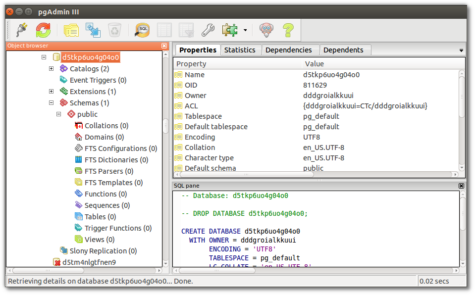
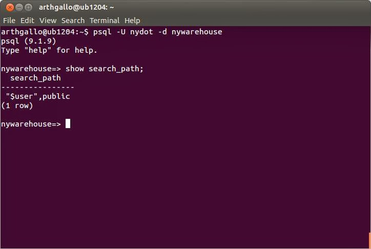
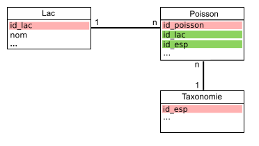

- Ces diapositives sont disponibles en version web et en PDF.
- L'ensemble du matériel de cours est disponible sur la page du portail moodle.
Séance 2: La collecte de données
BIO 500 - Méthodes en écologie computationnelle
Dominique Gravel
Laboratoire d'écologie intégrative
Séance 2
Les données en biologie
La collecte de données

La collecte de données
En biométrie, il existe plusieurs grandes familles de données:
- Quantitative (variables continues)
- Semi-quantitative (variables discrètes)
- Qualitatives (variables de rang)
Le type de données collectées conditionne les analyses statistiques que l'on pourra réaliser sur les données.
La collecte de données en biologie
Alors, qu'en est-il d'une donnée biologique ?

La collecte de données en biologie
Le problème de multidimensionnalité

La collecte de données en biologie
Le problème de multidimensionnalité

Note: Pour la prise de données de facteurs environnementaux (abiotiques), on retrouverait une forme de type 3n.
La collecte de données en biologie
En biologie, on classifie les données selon 4 dimensions/classes d'information:
- Biotique/abiotique
- Taxonomique
- Temporelle
- Spatial
Au sein de ce cours, nous nous attarderons à la façon de structurer ses données. Les spécificités propres à chacune de ces dimensions seront présentées. D'abord le format des données, puis les types de données.
Le format des données
Le format des données
Format large
| ID | esp | 2010 | 2011 | 2014 |
|---|---|---|---|---|
| 567-1 | acsa | 460 | NA | NA |
| 567-2 | acsa | 100 | NA | NA |
| 567-3 | acsa | 120 | NA | NA |
| 598 | piru | NA | 380 | NA |
| 876 | abba | NA | NA | 160 |
- Privilégier le format long
- Une ligne = une observation
Format long
| ID | esp | annees | dhp_mm |
|---|---|---|---|
| 567-1 | acsa | 2010 | 460 |
| 567-2 | acsa | 2010 | 100 |
| 567-3 | acsa | 2010 | 120 |
| 598 | piru | 2011 | 380 |
| 876 | abba | 2014 | 160 |
- Nom de colonnes court, sans accent, sans espace et explicite.
- Si possible, attachez les unités au nom de la colonne.
Le format des données: tableaux
Garder l'approche un tableau doit contenir un type d'information:
| ID_plot | ID_arbre | ID_multi | esp | annees | dhp_mm |
|---|---|---|---|---|---|
| A | 567 | 1 | acsa | 2010 | 460 |
| A | 567 | 2 | acsa | 2010 | 100 |
| A | 567 | 3 | acsa | 2010 | 120 |
| B | 598 | NA | piru | 2011 | 380 |
| B | 876 | NA | abba | 2014 | 160 |
| ID_plot | annees | variable | valeur |
|---|---|---|---|
| A | 2010 | pp_tot_mm | 880 |
| B | 2011 | pp_tot_mm | 560 |
| B | 2014 | pp_tot_mm | 900 |
| A | 2010 | temp_max_deg | 24 |
| B | 2011 | temp_max_deg | 26 |
| B | 2014 | temp_max_deg | 28 |
- Si l'on veut ajouter des données sur le climat, on ouvrira un nouveau tableau.
Le format des données: colonnes
Ne pas agréger l'information dans une seule colonne
| ID_arbre | esp | annees | dhp_mm |
|---|---|---|---|
| 567-1 | acsa | 2010 | 460 |
| 567-2 | acsa | 2010 | 100 |
| 567-3 | acsa | 2010 | 120 |
| 598 | piru | 2011 | 380 |
| 876 | abba | 2014 | 160 |
- Une colonne = une information
| ID_arbre | ID_multi | esp | annees | dhp_mm |
|---|---|---|---|---|
| 567 | 1 | acsa | 2010 | 460 |
| 567 | 2 | acsa | 2010 | 100 |
| 567 | 3 | acsa | 2010 | 120 |
| 598 | NA | piru | 2011 | 380 |
| 876 | NA | abba | 2014 | 160 |
Le format des données: colonnes
Important: votre fichier de données brutes (destiné au stockage à long terme) ne doit pas contenir de champ calculé (c.a.d. une nouvelle colonne avec une moyenne, etc..)
Les types de données
Les données biotiques et abiotiques
En informatique, on distingue plusieurs types de données:
| Appelation | Type | Valeurs | Taille |
|---|---|---|---|
BOLEAN |
Boléen | vrai/faux | 1 octet |
INTEGER |
Entiers | -998, 123 | 1 à 4 octets |
DOUBLE, FLOAT |
Nombres réels | 9.98, -4.34 | 4 à 8 octets |
CHAR,VARCHAR |
Chaine de caractères | lapin | n x 1 à 8 octets |
TIMESTAMP,DATE,TIME |
Dates et heures | 1998-02-16 | 4 à 8 octets |
- Ce sont ces types qui seront utilisés pour entreposer nos données biotiques et abiotiques.
- Le choix d'un type approprié permet de réduire la taille du fichier de données.
Les données temporelles
La plupart des languages/programmes disposent d'un type TIMESTAMP, DATE et TIME pour représenter une donnée temporelle.
On utilisera préférablement la norme ISO8601 pour représenter ces données.
TIMESTAMP(Heure et temps): On utilisera la notationYYYY-MM-ddThh:mm:ss. ex.1977-04-22T01:00:00-05:00DATE: On utilisera la notationYYYY-MM-dd. ex. 1997-04-22TIME: On utilisera la notationHH:mm:ssdans un systéme de 24 heures. ex. 01:30:00.
Les données temporelles
Gardez à l'esprit que vos données pourraient être réutilisées à travers le Monde. Les dates ne sont pas représentées de la même manière que l'on soit en Amérique du Nord ou en Europe. Il est donc important de normaliser la saisie de ce type d'information.
Les données temporelles
Une autre représentation de la date du jour peut-être basé sur le calendrier Julien.

- Inconvénient: Le jour julien doit toujours être accompagné de l'année (YYYY).
- Avantage: simplifie les analyses temporelles intra-annuelles.
Les données taxonomiques
Un exemple avec l'érable à sucre
Selon vous quelle option est la meilleure?
| Option | Exemple |
|---|---|
| 1. Code spécifique à l'étude | ACSA |
| 2. Code du ministère | ERS |
| 3. Genre et espèce | Acer saccharum |
| 4. Nom vernaculaire | Érable à sucre |
| 5. Numéro Taxonomique (TSN - ITIS) | 28731 |

Les données taxonomiques
Un exemple avec l'érable à sucre
| Option | Exemple |
|---|---|
| 1. Code spécifique à l'étude | ACSA |
| 2. Code du ministère | ERS |
| 3. Genre et espèce | Acer saccharum |
| 4. Nom vernaculaire | Érable à sucre |
| 5. Numéro Taxonomique (TSN - ITIS) | 28731 |
Option 1 et 2: Doit être associé à des métadonnées. Risque de perte du fichier attaché.
Option 3: Le genre et l'espèce peuvent changer à travers le temps.
Option 4: Le nom vernaculaire des espèces est le pire choix. Le nom vernaculaire est propre à un pays, à une région géographique, à une culture/dialecte.
Les données taxonomiques
Un exemple avec l'érable à sucre
| Option | Exemple |
|---|---|
| Code spécifique à l'étude | ACSA |
| Code du ministère | ERS |
| Genre et espèce | Acer saccharum |
| Nom vernaculaire | Érable à sucre |
| Numéro Taxonomique (TSN - ITIS) | 28731 |
- Option 5: Cette option couplée à l'option 3, est le meilleur choix.
Les données taxonomiques
On privilégie généralement l'utilisation de code espèce standardisée:
- ITIS
- VASCAN (Plantes vasculaires du Canada)
- NCBI
Avantage: Chacune de ces institutions/infrastructures nous permettent de valider et retirer l'ensemble de la classification taxonomique d'une espèce à partir de son code. Même si l'identifiant change (nouvelle classification), nous serons en mesure de trouver le nouvel identifiant taxonomique à partir de l'ancien.
Exemple: https://www.itis.gov/servlet/SingleRpt/SingleRpt?search_topic=TSN&search_value=28731#null
Les données spatiales
Il existe plus de 65 familles de projections géographiques pour représenter des coordonnées sur la planète, en voici 3 des plus connues:

- Il est important de choisir un bon système de projection pour minimiser la déformation spatiale (surtout à nos latitudes)
- À nos latitudes, on privilégiera l'utilisation d'une projection conique. Les ministères du Québec conseillent généralement l'utilisation d'une projection conique conforme de Lambert.
Les données spatiales
- Ce qu'il est important de savoir: des coordonnées spatiales sans système de projection ne veulent strictement rien dire.
- Ainsi, lorsque l'on entrepose des données spatiales, trois colonnes doivent être représentées:
- La coordonnée en X
- La coordonnée en Y
- La projection écrite en texte (voir votre GPS), ou préférablement l'identifiant unique de la projection.
Les données spatiales
Deux bases de données connues permettent de fournir des identifiants uniques:
EPSG: European Petroleum Survey Group.SRID: Spatial reference system.
Ces deux identifiants sont généralement identiques et peuvent être trouvés à cette adresse: http://spatialreference.org/
L'absence de données
On peut représenter l'absence de données de plusieurs façons:
- Laisser la cellule vide (
NULL) - Mettre un
NA(Not Available) - Mettre un 0
- Mettre
-9999dans une colonne numérique
Selon vous, quelle est l'action la plus appropriée ?
Le format des données
On peut représenter l'absence de données de plusieurs façons:
- Laisser la cellule vide: montre que l'information n'a pas été saisie (un oublie)
Mettre un
NA(Not Available): Montre que l'information est réellement indisponible (car le NA est saisie par un humain).Mettre un 0 : JAMAIS (empêche la distinction entre un vrai d'un faux 0, influence la moyenne)
Mettre
-9999dans une colonne numérique: Ce choix peut être utilisé seulement pour les jeux de données très importants (centaine de Megas-octet), et doit être référencé dans les métadonnées.
Choisir le bon type et format de données
Si l'on ne choisit pas le type de données approprié, cela aura diverses conséquences:
- Des problèmes de performance (ex. : il est plus rapide de faire une recherche sur un nombre que sur une chaîne de caractères)
- Un comportement contraire à celui attendu (ex. : trier sur un nombre stocké comme tel, ou sur un nombre stocké comme une chaîne de caractères ne donnera pas le même résultat)
- L'impossibilité d'utiliser des fonctionnalités propres à un type de données (ex. : stocker une date comme une chaîne de caractères vous prive des nombreuses fonctions temporelles disponibles).
Finalement...
Pourquoi prendre soins de ces données ?
Les bases de données relationnelles
L'organisation des données
Où sommes-nous?

Le Tesseract de la biologie
- Il est difficile de stocker les données écologiques dans un tableau excel (n-2) lorsque les données écologiques ont (n-4).
Les bases de données (BDs) à la rescousse

- Les BDs permettent de redimensionner ce problème (plusieurs tableaux de n-2 avec des relations) grâce au modèle d'entités-relations.
- Chaque table correspond à une dimension. Les tables sont liées entre elles par des relations. Cette structure est appelée schéma en étoile.
Avantages des bases de données
- Maintenir l'intégrité entre les enregistrements de nos tableaux. Une observation ne peut être faite sur un site qui n'existe pas.
- Normaliser et contrôler la qualité des données. Chaque colonne est un type précis de données. Des contraintes peuvent être appliquées sur chaque colonne.
- Éviter les redondances dans le stockage de l'information (obtenir une forme normale), voir la section Format de donnée du cours 2.
Avantages des bases de données
Autres avantages indéniables:
- Obtenir un gain de temps et de performance.
- Séparer les données brutes des données destinées aux analyses.
- Rendre flexible la préparation des données pour les analyses.
- Pemettre le travail simultané de plusieurs utilisateurs grâce à l'approche client-serveur.
- Déclencher des procédures de sauvegardes.
- Suivre les modifications/ajouts à la BD (journal de transactions).
L'approche client-serveur

- Le serveur est un ordinateur contenant la base de données.
- Si le serveur est votre ordinateur, on se connectera alors localement (environnement de développement).
- Si le serveur est physiquement ailleurs (mais accessible via le réseau), on parlera de serveur distant (environnement de production).
L'approche client-serveur
- Le client peut être un logiciel, tout comme un langage installé sur votre ordinateur.
- On se sert de ce langage ou logiciel pour interagir avec le serveur de base de données présent localement ou à distance.
- On peut donc avoir plusieurs clients sur un même ordinateur.
L'approche client-serveur


- Il existe une grande diversité de clients, mais nous utiliserons essentiellement les trois suivants:
- pgadmin3: logiciel avec une interface graphique.
- R: language de programmation scientifique.
Note: La plupart des langages de programmation disposent de librairies permettant de se connecter à une base de données sur un serveur local ou distant.
L'approche client-serveur
Le client se connecte pour effectuer différentes opérations:
- Créer une base de données.
- Créer des tables avec des relations.
- Insérer des données.
- Interroger les données par requête.
- Supprimer des données ou des tables.
- Mettre à jour des données ou des tables.
- Supprimer la base de données.
L'approche client-serveur
Le serveur répond avec des données, des messages d'erreurs ou des status (e.g. Données insérées).
L'approche client-serveur avec multi-utilisateurs
On pourrait envisager la situation suivante...

L'approche multi-utilisateurs peut uniquement se faire si le serveur est distant.
Les Systèmes de Gestion de Base de Données (SGBDs)
Les SGBDs
- Les base de données sont présentes sur un serveur.
- Pour créer, interroger, gérer et maintenir des bases de données, on utilisera un Système de Gestion de Base de Données (souvent appelé SGBD) installé sur le serveur.
La diversité des SGBDs
Il en existe une multitude:

- Mais ces systèmes disposent tous d'un dénominateur commun: le
langage SQL - Dans ce cours, nous utiliserons le système de gestion de données
PostgreSQL.
Le langage SQL
Définition
Le SQL (Structured Query Language) est le langage des SGBDs. Il permet de communiquer avec une base de données.
Le langage SQL
Le SQL permet de:
- Créer une base de données (
CREATE DATABASE). - Créer des tables et établir des relations (
CREATE TABLE). - Insérer des données (
INSERT). - Interroger les données par requête (
SELECT). - Supprimer des données ou des tables (
DROP,DELETE). - Mettre à jour des données ou des tables (
UPDATE,ALTER). - Supprimer la base de données (
DROP DATABASE).
Chacune de ces commandes est une instruction SQL envoyée au serveur pour manipuler et interroger la base de données.
Le langage SQL
Pour cette séance, nous nous attarderons seulement à:
- Créer une base de données (
CREATE DATABASE). - Créer des tables et établir des relations (
CREATE TABLE). - Supprimer ou modifier des tables (
DROP TABLE,ALTER TABLE). - Supprimer la base de données (
DROP DATABASE).
Soyez attentifs, car le travail de cette semaine consiste à écrire un script qui permet la création de la base de données (les tables et leurs relations) pour entreposer les données que vous avez collectées lors de la séance 2.
Conceptualisation d'une base de données en 5 étapes
Étape 1. Faire une liste des variables
Exercice (15-20 minutes):
- Dresser la liste des informations collectées par les différents groupes.
- Regrouper les variables communes entre les équipes pour obtenir une ontologie conjointe.
Étape 2. Regrouper les variables dans des tables
Exercice (15-20 minutes): Regrouper les variables dans des tables.
- Déterminer les tables/entités:
- Qu'elles sont les unités d'échantillonnage? Autrement dit, sur quelles entités portent nos mesures?
- Remplir les tables avec les variables de l'étape 1.
À ce stade de la conceptualisation, une table est une entité possédant des attributs. Chaque attribut est une colonne.
Étape 3. Établir le type d'association entre les tables
Le concept d'association

Étape 3. Établir le type d'association entre les tables
Il existe plusieurs types d'association:
| Table 1 | Table 2 | Relation | exemple |
|---|---|---|---|
| 1 | 1 | one-to-one | personne ←→ permis de conduire |
| 0..1 | 1 | optionnel dans la table 1, one-to-one | permis de conduire ←→ personne |
| 0..n ou n | 0..n or n | optionnel dans les deux tables, many-to-many | personne ←→ livre |
| 1..n ou n | 1 | many-to-one | personne ←→ lieu de naissance |
Exercice (5 minutes): Quel(s) type(s) d'association retrouve-t-on entre nos tables?
Étape 4. Établir les clés primaires et étrangères
Le concept des clés primaires et des clés étrangères

Important:
- Une clé primaire garantie le caractère unique d'un enregistrement (ligne d'une table).
- Une clé primaire ne peut donc jamais être
NULL. - Une clé primaire peut être composite, une combinaison de colonnes.
Étape 4. Établir les clés primaires et étrangères
Exercice (5 minutes)
- Déterminer quels sont les attributs/colonnes garantissant le caractère unique d'un enregistrement (ligne d'une table).
- Déterminer quelles sont les clés étrangères.
Étape 5. Assigner un type de données aux attributs
Chaque attribut d'une table doit correspondre à un type de données:
| Appelation | Type | Valeurs | Taille |
|---|---|---|---|
BOLEAN |
Boléen | vrai/faux | 1 octet |
INTEGER |
Entiers | -998, 123 | 1 à 4 octets |
DOUBLE, FLOAT |
Nombres réels | 9.98, -4.34 | 4 à 8 octets |
CHAR,VARCHAR |
Chaine de caractères | lapin | n x 1 à 8 octets |
TIMESTAMP,DATE,TIME |
Dates et heures | 1998-02-16 | 4 à 8 octets |
Pour tous les types de données, voir la documentation PostgreSQL
Exercice (15 minutes): Associer à chaque attribut un type de données.
En résumé
Finalement, qu'est-ce qu'un modèle conceptuel pour une base de données?
Une façon de représenter l'information dans un modèle de type entités-relations où chaque entité (table) possède des attributs (colonnes).
L'étape suivante est de transcrire ce modèle conceptuel des données en modèle logique de données (c.a.d compréhensible par l'ordinateur).
Transcrire ces étapes en SQL
Les grandes étapes
- Spécifier la connexion avec le serveur
- Créer la base de données
- Créer les tables et spécifier les clés
- Ajouter de l'information dans les tables
- Faire des requêtes pour extraire l'information
Se connecter au SGBD (PostgreSQL)
Pour que le client communique avec la SGBD, les informations de connection au serveur sont indispensables:
host: L'adresse du serveur.localhostsi la base de données est sur votre ordinateur.port: La base de données écoute sur un port spécifique du serveur.user: le nom d'utilisateurpassword: le mot de passe de l'utilisateur.dbname: le nom de la base de données
Se connecter au SGBD (PostgreSQL) via R
conest un objet contenant la connexion avec le serveur.- On utilisera la fonction
dbSendQuery()pour envoyer les instructions SQL. - Le deuxième argument de la fonction
dbSendQuery()est une chaine de caractères contenant les instructions SQL.
library(RPostgreSQL)
con <- dbConnect(PostgreSQL(), host="localhost",
port=5433, user= "postgres", password=NA)
dbSendQuery(con,"Instructions SQL à envoyer")
Se connecter au SGBD (PostgreSQL) via pgAdmin3
- On préfère parfois un interface graphique pour interagir avec la SGBD.
Création de la base de données via R
dbSendQuery(con,"CREATE DATABASE bd_films;")
## <PostgreSQLResult>
La SGBD nous répond... mais elle n'a pas grand chose à ajouter.
Important:
- En SQL, chaque instruction se termine par un point-virgule.
- Les instructions sont écrites en majuscules et les variables en minuscules.
- Toutes les instructions SQL sont énumérées et expliquées en Français à cette adresse: http://docs.postgresql.fr/9.5/sql-commands.html
Création de la base de données via R
Puis, on se connecte à cette nouvelle base de données grâce à la fonction dbConnect():
dbConnect(con,dbname="bd_films")
## <PostgreSQLConnection>
Création d'une table avec clé primaire
Voici un exemple d'instruction SQL pour créer la table films.
CREATE TABLE films (
code char(5),
titre varchar(40),
date_prod date,
genre varchar(10),
duree interval hour to minute,
PRIMARY KEY (code,titre)
);
filmsest le nom de la table- Chaque attribut de la table (
code,titreetc) dispose d'un type de données (char(5),varchar(40)etc) - La dernière ligne correspond aux contraintes de la table telle que la clé primaire.
- Question: Cette clé primaire est composite ou simple?
Création d'une table avec clé étrangère
Si l'on veut créer une table acteurs et référencer cette table à la table films.
CREATE TABLE acteurs (
nom varchar(40),
prenom varchar(40),
naissance date,
code char(5),
titre varchar(40),
PRIMARY KEY (nom,prenom),
FOREIGN KEY (code, titre) REFERENCES
films (code, titre) ON DELETE CASCADE
);
- On déclare
prenometnomcomme étant la clé primaire de la tableacteurs. - On référence les attributs
codeettitrecomme étant la clé étrangère.
Création d'une table avec clé étrangère
Si l'on veut créer une table acteurs et référencer cette table à la table films.
CREATE TABLE acteurs (
nom varchar(40),
prenom varchar(40),
naissance date,
code char(5),
titre varchar(40),
PRIMARY KEY (nom,prenom),
FOREIGN KEY (code, titre) REFERENCES
films (code, titre) ON DELETE CASCADE
);
Important:
- On ne peut plus insérer d'acteurs jouant dans un film qui n'est pas référencé dans la table
films. C'est ce que l'on appelle l'intégrité référentielle. - Lorsque l'on supprime un enregistrement dans
films, les acteurs référencés à ce film vont être automatiquement supprimés grâce à l'instructionCASCADE.
Création d'une table avec R
On se sert de R pour envoyer l'instruction SQL de création de la table:
films_sql <- "
CREATE TABLE films (
code char(5),
titre varchar(40),
did integer,
date_prod date,
genre varchar(10),
duree interval hour to minute,
PRIMARY KEY(code,titre)
);"
dbSendQuery(con,films_sql)
Création d'une table
Exercice pour le travail de session (20 minutes):
En vous inspirant des exemples et de la syntaxe SQL expliquée précédemment, écrivez le script contenant les instructions SQL permettant la création de table la personnes.
Supprimer la base de données
dbSendQuery(con,"DROP DATABASE bd_films;")
## <PostgreSQLResult>
dbDisconnect(con)
## [1] TRUE
Lectures et travail pour la semaine prochiane
Travail
Maintenant que vous en savez plus sur le format des données, vous devez écrire le script R pour créer votre base de données en spécifiant les tables, les champs et les clés liant les tables entre elles.
Lectures et travail pour la semaine prochaine
Travail
- Poisot et al. 2014. Moving toward a sustainable ecological science: don't let data go to waste ! Ideas in Ecology and Evolution 6: 11-19
- Mills et al. 2015. Archivin Primary Data: Solutions for Long-term Studies. Trends in Ecology and Evolution.